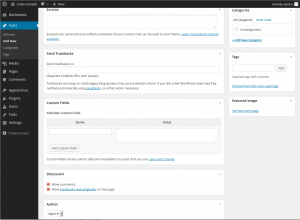

Записи это элементы, который показываются в обратном хронологическом порядке на главной странице блога. В отличие от страниц, записи снабжаются полем для комментария и включаются в RSS-потоки вашего сайта.
Чтобы создать запись:
- Авторизуйтесь в WordPress Administration Panel.
- Перейдите на закладку Write.
- Начните заполнять пустые поля.
- Если нужно, выбирайте рубрику, добавляйте метки и переходите к разделам ниже. Каждый из разделов описан ниже.
- Когда все будет готовы, щелкните Опубликовать.
Descriptions of Post Fields

WordPress Admin Writing Post Advanced Panel - Top of Page
- Title
- The title of your post. You can use any words or phrases. Avoid using the same title twice as that will cause problems. You can use commas, apostrophes, quotes, hypens/dashes, and other typical symbols in the post like "My Site - Here's Lookin' at You, Kid." WordPress will clean it up for the link to the post, called the post-slug.
- Post Editing Area
- The big blank box where you enter your writing, links, links to images, and any information you want to display on your site. You can use either the Visual or the HTML view to compose your posts. For more on the HTML view, see the section below, Visual Versus HTML View.
- Preview this Post
- Allows you to see how your post will look before officially publishing it.
- Publish Status
- Shows three states for the post: Published, Pending Review, and Unpublished. A Published status means the post has been published on your blog for all to see. Pending Review means the draft is waiting for review by someone else prior to publication. Unpublished means the post has not been published and remains a draft. If you select a specific publish status and then click the Save button, that status is applied to the post. For example, to save a post in the Pending Review status, select Pending Review from the Publish Status drop-down box, and then click Save. You can see all posts organized by status by going to Manage > Posts.
- Permalink
- After you save your post, the Permalink below the title shows the potential URL for the post, as long as you have permalinks enabled. (To enable permalinks, go to Settings > Permalinks.) The URL is generated from your title. In previous versions of WordPress, this was referred to as the "page-slug." The commas, quotes, apostrophes, and other non-HTML favorable characters are changed and a dash is put between each word. If your title is "My Site - Here's Lookin' at You, Kid", it will be cleaned up to be "my-site-heres-lookin-at-you-kid" as the title. You can manually change this, maybe shortening it to "my-site-lookin-at-you-kid".
- Save
- Allows you to save your post as a draft rather than immediately publishing it. To return to your drafts later, click the Manage tab, click the Drafts link that appears below the Manage Posts title, and then click your draft post.
- Publish
- Publishes your post on the site. You can edit the time when the post is published by clicking the Edit link above the Publish button and specifying the time you want the post to be published. By default, at the time the post is first auto-saved, that will be the date and time of the post within the database.
- Tags
- Refers to micro-categories for your blog, similar to including index entries for a page. Posts with similar tags are linked together when a user clicks one of the tags. Tags have to be enabled with the right code in your theme for them to appear in your post.
- Categories
- The general topic the post can be classified in. Generally, bloggers have 7-10 categories for their content. Readers can browse specific categories to see all posts in the category. To add a new category, click the +Add New Category link in this section. You can manage your categories by going to Manage > Categories.
- Excerpt
- A summary or brief teaser of your posts featured on the front page of your site as well as on the category, archives, and search non-single post pages. Note that the Excerpt does not usually appear by default. It only appears in your post if you have changed the index.php template file to display the Excerpt instead of the full Content of a post. If so, WordPress will automatically use the first 55 words of your post as the Excerpt or up until the use of the More Quicktag mark. If you use an Explicit Excerpt, this will be used no matter what. For more information, see Excerpt.
- Trackbacks
- A way to notify legacy blog systems that you've linked to them. If you link other WordPress blogs, they'll be notified automatically using pingbacks. No other action is necessary. For those blogs that don't recognize pingbacks, you can send a trackback to the blog by entering the website address(es) in this box, separating each one by a space. See Trackbacks and Pingbacks for more information.
- Custom Fields
- Custom Fields offer a way to add information to your site. In conjunction with extra code in your template files or plugins, Custom Fields can modify the way a post is displayed. These are primarily used by plugins, but you can manually edit that information in this section.
- Comments & Pings
- Options to enable interactivity and notification of your posts. This section hosts two check boxes: Allowing Comments and Allowing Pings. If Allowing Comments is unchecked, no one can post comments to this particular post. If Allowing Pings is unchecked, no one can post pingbacks or trackbacks to this particular post.
- Password Protect This Post
- Allows you to keep this particular post private so that only those with the password can read it. Be sure and write down the password and keep it in a safe place.
- Post Author
- A list of all blog authors you can select from to attribute as the post author. This section only shows if you have multiple users with authoring rights in your blog. To view your list of users, see Users tab on the far right. For more information, see Users and Authors.
 WordPress Admin Writing Post Advanced Panel - Bottom of Page
Note: You can set basic options for writing, such as the size of the post box, how smiley tags are converted, and other details by going to Settings > Writing. See Writing Options SubPanel.
Best Practices For Posting
You can say or show the world anything you like on your WordPress site. Here are some tips you need to know to help you write your posts in WordPress.
- Practice Accessibility
- To be compliant with web standards for accessibility, be sure to include ALT and TITLE descriptions on links and images to help your users, such as <a title="WordPress Codex" href="http://codex.wordpress.org/">WordPress Codex</a>.
- Use Paragraphs
- No one likes to read writing that never pauses for a line break. To break your writing up into paragraphs, use double spaces between your paragraphs. WordPress will automatically detect these and insert <p> HTML paragraph tags into your writing.
- Using Headings
- If you are writing long posts, break up the sections by using headings, small titles to highlight a change of subject. In HTML, headings are set by the use of h1, h2, h3, h4, and so on. By default, most WordPress Themes use the first, second, and sometimes third heading levels within the site. You can use h4 to set your own headings. Simply type in:
- <h4>Subtitle of Section</h4>
- with double lines before and after and WordPress will make that title a headline in your post. To style the heading, add it to your style.css style sheet file. For more information on styling headings, check out Designing Headings.
- Use HTML
- You don't have to use HTML when writing your posts. WordPress will automatically add it to your site, but if you do want control over different elements like boxes, headings, and other additional containers or elements, use HTML.
- Spell Check and Proof
- There are spell check Plugins available, but even those can't check for everything. Some serious writers will write their posts in a text editor with spell check, check all the spelling and proof it thoroughly before copying and pasting into WordPress.
- Think before you post
- Ranting on blogs is commonplace today, but take a moment and think about what you are writing. Remember, once it is out there, it can be seen by many and crawled by search engines; and taking things back is harder once it is public. Take a moment to read what you've written before hitting the Publish button. When you are ready, share it with the world.
- Write about what you like
- You’ve heard this a thousand times before and it sounds too cliched, but it is true. If you force yourself to write something that you don’t really enjoy, it will show. Perhaps you might not have a specific theme for writing when you just start, but that’s ok. You’ll become more focused later. Just enjoy the experience and write what you like.
- Write frequently
- Write as frequently as you can, may be even more than twice a day, but don’t let quantity get in the way of quality. Your viewers come for content, don’t give them useless stuff.
- Don’t use too much slang
- Not all the readers will be from your part of the world so make sure people can understand easily.
- Don't hide your emotions
- Tempting as it might be, don’t hide your real emotions. After all that is what a blog is about. If you want, you can stay anonymous and voice your feelings on whatever you are passionate about. You might have strong views on various subjects but let your readers know your passion. What is passion worth if you can’t even share it? You’ll actually love the discussions it can lead to. The discussions will broaden your own thinking and you might end up making some really good friends.
- Consider your readers
- Perhaps this sounds weird, but consider who needs to know about your blog before you tell them about your new blogging hobby. Will you be able to write freely if you tell them? How much should you let your readers know about you? Is it ok if your boss or girlfriend reads your posts? If you don’t want them to read, take anonymity measures accordingly.
- Make use of comments
- Comments let people share their ideas. Sometimes, they might not be good, but you can ask such people to shut up. Most of the times, they will and if they don’t you can delete their comments. Blogging like real life, can be both fun and not so fun at times. Be prepared. Also, give your people a place to contact you in private if they want to write to you.
- Worry about blog design later
- Blog design matters, but only to an extent. Don’t give up on blogging just because the design isn’t coming up as you’ll like it it to be. Sooner or later, you’ll get around the design problems with ease. But continue writing. Content is what attracts your readers, not just the look of your blog.
- Don’t play too safe
- Talk about the real you. Readers aren’t impressed by how big your house is, which cool club you belong to, or what the weather is in your hometown. Don’t be a bore and put a long post on how you fixed the leaking tap in minutes. Readers don’t care about braggers, they care about the real you--how you feel, what gets you excited, why you are the person you are. But if achievements are all that you can talk about, you will bore your readers.
- Use pictures and videos
- They make the pages colorful and viewers get to see a little of your part of the world. They feel connected.
- Keep writing
- Don’t stop blogging. If you don’t have anything to write about, chances are, you are still holding back. Let loose. Perhaps surf more blogs and maybe you’ll get an idea. You can write about your friends, complain about your boss, or simply rant about what’s gone wrong. Yet if nothing else works, just write a review on the latest movie, book, or product. Easy actually.
- Save your posts
- Save your posts before you press the publish button. Anything can happen with your computer or with an internet connection. You don’t need to lose your post.
Visual Versus HTML Editor
When writing your post, you have the option of using the visual or HTML mode of the editor. The visual mode lets you see your post as is, while the HTML mode shows you the code and replaces the WYSIWYG editor buttons with quicktags. These quicktags are explained as follows.
- b - <strong></strong> HTML tag for strong emphasis of text (i.e. bold).
- i - <em></em> HTML tag for emphasis of text (i.e. italicize).
- b-quote - <blockquote></blockquote> HTML tag to distinguish quoted or cited text.
- del - <del></del> HTML tag to label text considered deleted from a post. Most browsers display as
striked through text. (Assigns datetime attribute with offset from GMT (UTC))
- link - <a href="http://example.com"></a> HTML tag to create a hyperlink.
- ins - <ins></ins> HTML tag to label text considered inserted into a post. Most browsers display as underlined text. (Assigns datetime attribute with offset from GMT (UTC))
- ul - <ul></ul> HTML tag will insert an unordered list, or wrap the selected text in same. An unordered list will typically be a bulleted list of items.
- ol - <ol></ol> HTML tag will insert a numbered list, or wrap the selected text in same. Each item in an ordered list are typically numbered.
- li - <li></li> HTML tag will insert or make the selected text a list item. Used in conjunction with the ul or ol tag.
- code - <code></code> HTML tag for preformatted styling of text. Generally sets text in a
monospaced font, such as Courier.
- more - <!--more--> WordPress tag that breaks a post into "teaser" and content sections. Type a few paragraphs, insert this tag, then compose the rest of your post. On your blog's home page you'll see only those first paragraphs with a hyperlink (
(more...)), which when followed displays the rest of the post's content.
- page - <!--nextpage--> WordPress tag similar to the
more tag, except it can be used any number of times in a post, and each insert will "break" and paginate the post at that location. Hyperlinks to the paginated sections of the post are then generated in combination with the wp_link_pages() or link_pages() template tag.
- lookup - Opens a JavaScript dialogue box that prompts for a word to search for through the online dictionary at answers.com. You can use this to check spelling on individual words.
- Close Tags - Closes any open HTML tags left open--but pay attention to the closing tags. WordPress is not a mind reader (!), so make sure the tags enclose what you want, and in the proper way.
Workflow Note - With Quicktag buttons that insert HTML tags, you can for example click i to insert the opening <em> tag, type the text to be enclosed, and click /i or Close Tags to insert the closing tag. However, you can eliminate the need for this 'close' step by changing your workflow a bit: type your text, select the portion to be emphasized (that is, italicized), then click i and your highlighted text will be wrapped in the opening and closing tags.
The Quicktag buttons also have the accesskey JavaScript attribute set, so you may be able to use a keyboard equivalent (e.g., Alt-b for bold) to "press" the button, depending on your browser.
On Windows, IE and Firefox prior to 2.0b2 use Alt to activate accesskeys, while Firefox 2.0b2 uses Alt-Shift. On Mac OS X, Firefox uses Ctrl.
More Information and Resources


{kind=link}